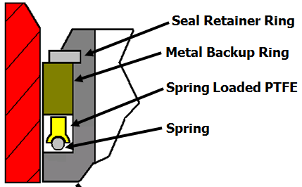
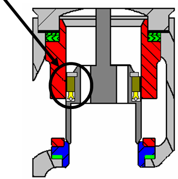

ch2 pass: table + seal figures; 47+48+49 consolidated
easy-e Piston Seals
| Piston seal | Valve | Temperature |
|---|---|---|
| Graphite piston ring | ED — balanced, metal seat | High |
| Two-piece PTFE + backup ring | ET — balanced, soft seat | Moderate |
| Spring-loaded PTFE | ET — balanced, soft seat | Lower; holds load as PTFE relaxes |

